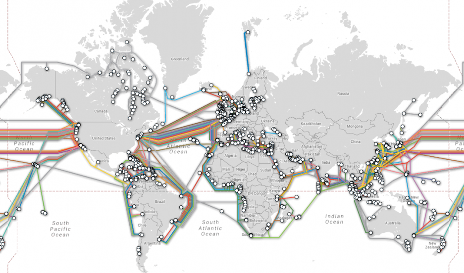

Among the many advancements in technology that has allowed us to deliver content on the web one of the greatest assets has been CDNs. A CDN allows us to dramatically increase the speed in which content can be downloaded by requiring less physical distance in which data has to travel.
Above: Image of all Trans-Oceanic Internet Cables